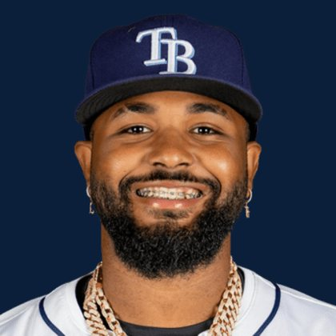
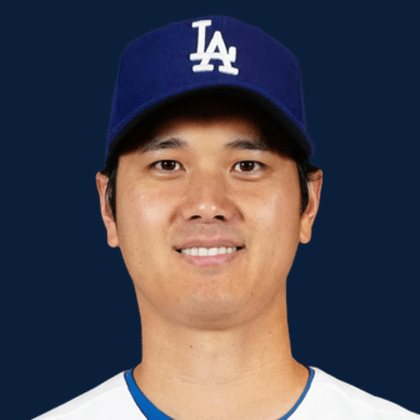
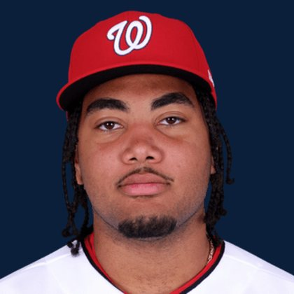
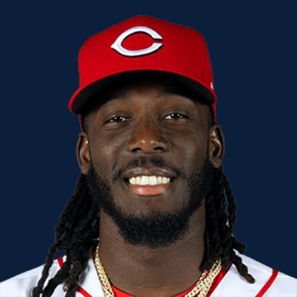

The Keep
Overall dynasty
Top 10 · 3 boards · November 27, 2026
Full board- 1

12,000 - 2

10,873 - 3
 10,228
10,228 - 4
 9,769
9,769 - 5
 9,409
9,409 - 6

9,111 - 78,855
- 8
 8,629
8,629 - 9
 8,426
8,426 - 10

8,241
BASE KEEP
The Keep · The Diamond · The Farm
Dynasty baseball
Updated November 27, 2026
The Keep
Top 10 · 3 boards · November 27, 2026
Full board
12,000
10,873
9,111
8,241The Diamond
Top 10 · this year only
Full boardFull tape · majors and farm
The long dynasty board. Majors plus prospects, mashed from the three deep lists.
2136 players
130 AB and 50 IP or fewer
Prospects who have not crossed 130 career MLB at-bats or 50 innings. Pipeline team top 30s plus the public farm lists.
925 players
More than 130 AB or 50 IP
Dynasty names who have crossed the farm cutoff, plus other active MLB players filled by the BK model.
1211 players
2027 projected nines
All 30 clubs, alphabetical. FanGraphs Roster Resource 2027 batting order with Depth Charts projections.
270 players
News
We have a yearbook's worth of awards for the top free agents.
“I want to be better than I was the day before” - Pete Crow-Armstrong opens up after defeating Shohei Ohtani to claim 2026 NL MVP Award…
Francisco Lindor isn't the blockbuster the Red Sox need at this year's MLB trade deadline Yahoo Sports
Royce Lewis shares a story about In-N-Out Burger.Before Royce Lewis was the No.
Fantasy Baseball Injury Updates: Prepare To Be Without Jacob Misiorowski After The MLB All-Star Game Sports Illustrated
MLB rumors: Mets to meet with NPB star, plus latest on Ketel Marte, Cubs, Mariners, Nationals, more CBS Sports
Possibility of Mets trading Francisco Lindor remains unlikely: Sources - The Athletic The New York Times
Skubal's new deal beats both the total value for a pitcher and the average annual value
Digest that turkey, read these links.
Path to a blockbuster Ketel Marte trade just became clearer for the Orioles Birds Watcher